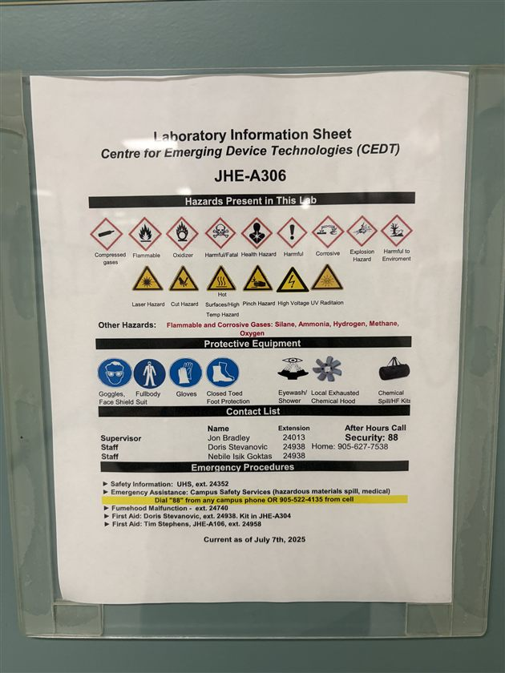
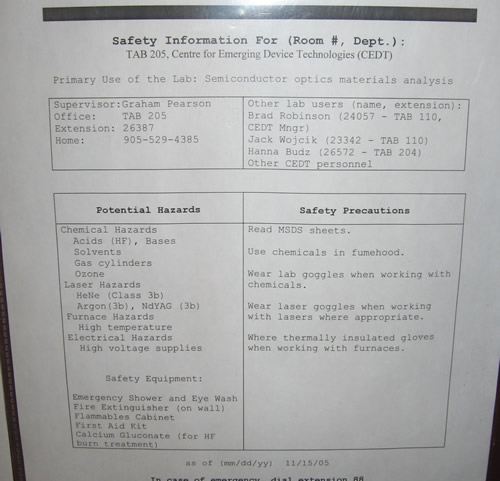
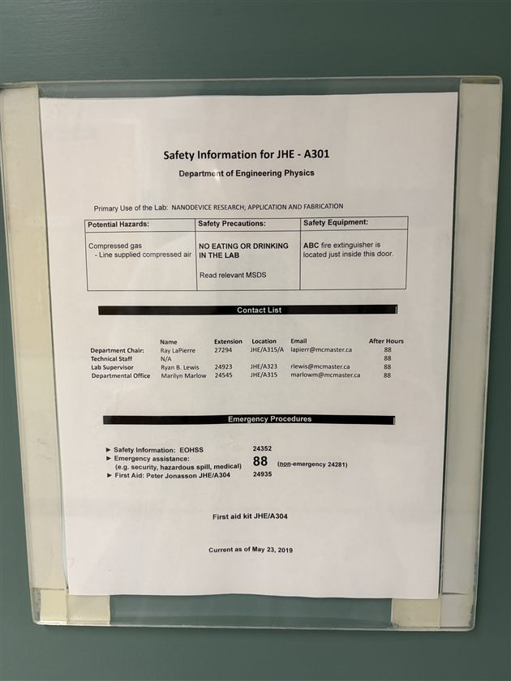

Lab Assessment
Lab Assessment Forms, also called Laboratory Information Sheets, are to be displayed on the entrance of any lab. They are the starting point for identifying hazards in the workplace.
The hazards, along with contact information for the primary lab users, are listed on the door to the room. Templates have been developed across different departments, including Eng Phys, to standardize this process.
The Lab Assessment indicates the hazards present in the lab, protective equipment required, contact list, and emergency procedures. It may also include site-specific training required to enter/use the equipment in the lab. The supervisor should therefore familiarize new lab occupants with the SOPs for conducting work in the lab.
Example Lab Assessment Forms


